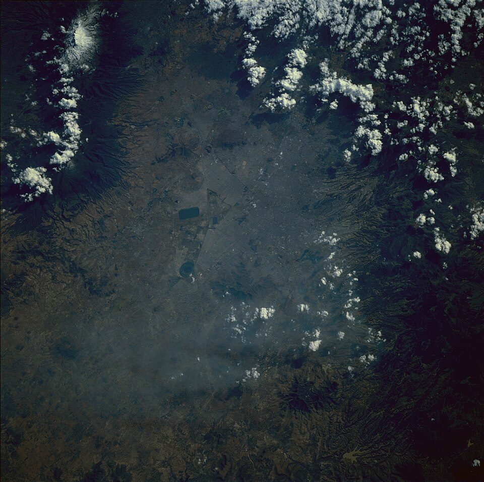
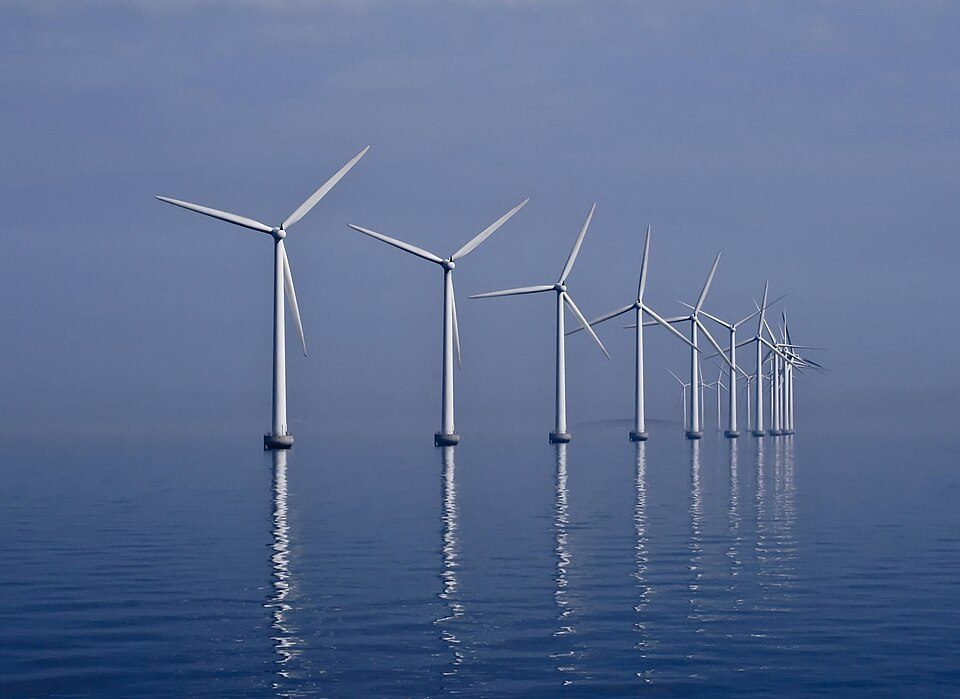

Planeta Tierra · 6 fichas
Nuestro impacto
Ocho mil millones de personas: la huella humana en el planeta, la contaminación, los plásticos, la deforestación y las soluciones que ya funcionan.
Ninguna especie había cambiado tanto la Tierra como la nuestra. Hemos transformado la mitad de las tierras, alterado el clima y llevado plásticos hasta la fosa de las Marianas. Pero también sabemos cómo arreglarlo, y en muchos lugares ya se está haciendo. Esta sección cuenta las dos caras.
- Población y huella humanaDe mil millones en 1800 a más de ocho mil millones hoy: cómo crece la humanidad, qué es la huella ecológica y por qué se habla del Antropoceno.

Contaminación del aire, el agua y el sueloEl aire que respiramos, el agua que bebemos y la luz que nos roba las estrellas: los tipos de contaminación, sus efectos y los éxitos para combatirla. Plásticos y residuosMás de 400 millones de toneladas al año: de dónde viene el plástico, adónde va, las islas de basura, los microplásticos y qué funciona para reducirlo.
Plásticos y residuosMás de 400 millones de toneladas al año: de dónde viene el plástico, adónde va, las islas de basura, los microplásticos y qué funciona para reducirlo. Deforestación y pérdida de hábitatsPor qué desaparecen los bosques, qué productos hay detrás, los incendios y los países que han conseguido recuperar sus árboles.
Deforestación y pérdida de hábitatsPor qué desaparecen los bosques, qué productos hay detrás, los incendios y los países que han conseguido recuperar sus árboles.
Energía y renovablesDel carbón al sol y el viento: de dónde sale la energía que usamos, cómo funcionan las renovables y por qué España es una potencia solar y eólica. Cuidar el planeta: solucionesEspacios protegidos, especies salvadas, acuerdos que funcionan y lo que cada persona puede hacer: las buenas noticias de la conservación.
Cuidar el planeta: solucionesEspacios protegidos, especies salvadas, acuerdos que funcionan y lo que cada persona puede hacer: las buenas noticias de la conservación.